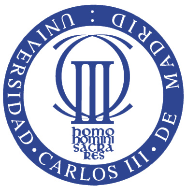
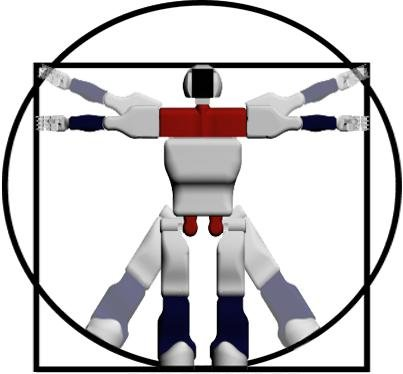
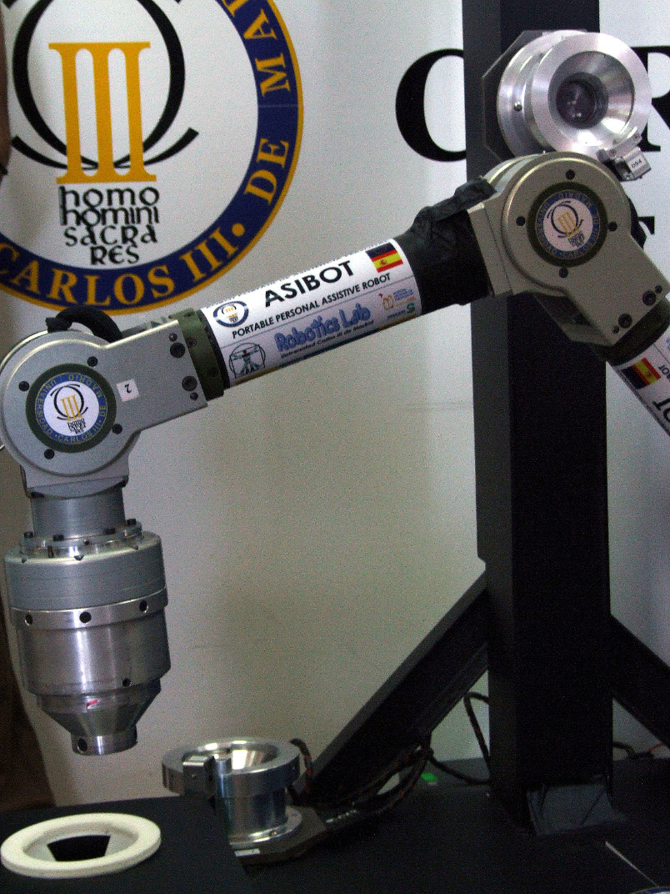

Welcome to the Asibot Web interface
Universidad Carlos III de Madrid
 This is Asibot Web Interface, a new, friendly way to comunicate with Asibot, the assistive robot of the Universidad Carlos III de Madrid. Click on Initialize Task Creator to start the fun!
 ASIBOT is a portable assistive robot for elderly and disabled people bringing more freedom in daily tasks as eating, drinking, shaving, make up, tooth cleaning, etc. The robot is under experimentation in the National Hospital of Paraplegics in Toledo.
The robot applications are oriented mainly to domestic assistive task for elderly and disease people. The robot has inside each tip a conical connector with a three finger gripper (each finger is composed by 8 flanges) to manipulate different objects or tools. The applications that had been tested in real environments and with real patients are: eating, drinking, shaving, make up, tooth cleaning, etc.